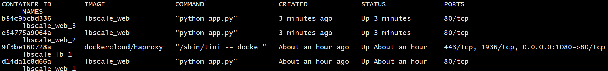

搭建wordpress容器
先用mysql5.6镜像启动一个名字为mysql-wordpress的容器，接着基于这个容器我们启动一个wordpress容器
1 | docker run -d --name mysql-wordpress -v /home/zack/dockerwork/mysql-workpress:/var/lib/mysql -e MYSQL_ROOT_PASSWORD=root -e MYSQL_DATABASE=wordpress mysql:5.6 |
之后访问服务器外网地址和7080端口就可以看到wordpress设置界面了
docker为了简化构建多个容器的操作，提出了docker-compose的功能。
docker-compose的yaml文件
我们将要启动的容器，挂在的目录，使用的网络等信息都写入名字为docker-compose.yaml文件里，之后通过docker-compose up启动多个容器。
docker-compose其实是个批处理工具，接下来我们先介绍yaml的几个字段名字
services：一个service代表一个container，可以通过dockerhub拉取镜像启动，也可以通过Dockerfile构建镜像启动
volumes: 挂载的卷，docker会根据该字段创建对应的卷
networks：网络命名空间，docker会根据该字段创建对应的网络
接下来将wordpress容器启动的命令，我们通过docker-compose进行改造
1 | version: '3' |
depends_on表示依赖哪个镜像，可以起到控制镜像构建顺序的目的
写好wordpress的docker-compose后，我们接下来介绍docker-compose的命令和安装，通过docker-compose启动容器
docker-compose安装和命令
通过curl命令安装docker-compose
1 | sudo curl -L https://github.com/docker/compose/releases/download/1.17.0/docker-compose-`uname -s`-`uname -m` -o /usr/local/bin/docker-compose |
下载完成后修改权限
1 | sudo chmod +x /usr/local/bin/docker-compose |
执行如下命令查看docker版本
1 | docker-compose --version |
如果显示版本信息，证明安装成功了。接下来介绍几个常用的命令
docker-compose up 命令可以找到当前目录下docker-compose.yml填写的service。当然也可以指定具体的compose文件
1 | docker-compose -f docker-compose.yml up |
可以看到容器启动，但是此时ctrl c退出后，容器也将停止，所以可以采用后台启动的方式
1 | docker-compose -f docker-compose.yml up -d |
此时执行docker ps可以看到容器启动了
我的容器部署在云服务上，输入服务器地址和端口，可以看到wordpress的安装程序
docker-compose stop 可以停止正在运行的容器
docker-compose down 停止并删除容器
docker-compose ps 显示通过docker-compose启动的容器
docker-compose images 显示docker-compose容器和镜像信息
docker-compose exec 后边接上yml中定义的service以及响应的命令，就可以实现进入容器等操作
docker-compose network ls 查看docker-compose的网络
1 | docker-compose exec mysql-cp bash |
上述命令进入mysql-cp容器中
compose启动flask
实现一个Dockerfile，构造flask容器
1 | FROM python:2.7 |
Dockerfile 中引用了python2.7的镜像，然后安装flask和redis库，导出5000端口，接着执行python文件
app.py内部实现了一个简单的flask程序
1 | from flask import Flask |
接下来实现docker-compose.yml
1 | version: "3" |
因为一个docker-compose.yml中定义的多个service是默认共享同一个网络的，所以app.py可以通过本地地址访问6379端口的redis服务。
然后compose将5000端口映射为8080端口，并且导入了环境变量REDIS_HOST为redis
我们通过docker-compose up -d 启动，然后docker ps 看到服务成功，接着在浏览器输入地址和8080端口就可以实现统计访问次数的功能了。
docker-compose水平扩展
docker-compose提供了水平扩展伸缩的功能。修改docker-compose.yml文件，将web的端口映射注释掉，否则水平扩展会出现端口冲突。
修改docker-compose.yml
1 | version: "3" |
我们添加了haproxy负载均衡，将访问1080端口的请求映射给80端口。然后我们将web服务的端口注释掉，防止启动多个web服务导致端口被抢占。
1 | FROM python:2.7 |
Dockerfile中修改了暴露的端口为80，这样负载均衡可以通过links指定web服务，从而访问该服务80端口
接下来我们修改app.py程序
1 | from flask import Flask |
将python程序修改为绑定80端口，接下来启动docker-compose up -d
容器启动后可以通过 curl 127.0.0.1:1080 方式访问测试服务
输出如下
1 | Hello Container World! I have been seen 1 times and my hostname is d14da1c8d66a. |
我们通过docker-compose up –scale web=3 -d
可以看出之前启动的web服务没有变化，又新启动了两个web服务，扩充为三个web服务了

可以扩充，当然也可以缩减，将docker-compose up –scale web=1 -d 执行后，就缩减为1个web服务了
我们将web服务扩充为5个，然后用curl脚本访问，循环访问
1 | for i in `seq 10`; do curl 127.0.0.1:1080; done |
后台通过负载均衡将请求派发给不同的web服务
1 | Hello Container World! I have been seen 2 times and my hostname is d14da1c8d66a. |
感谢关注我的公众号